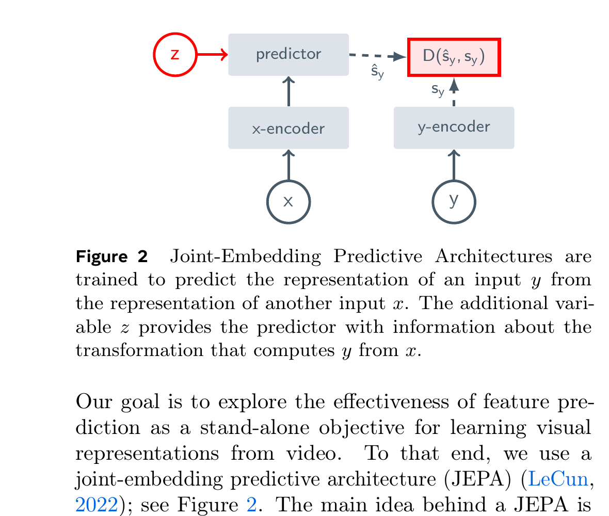
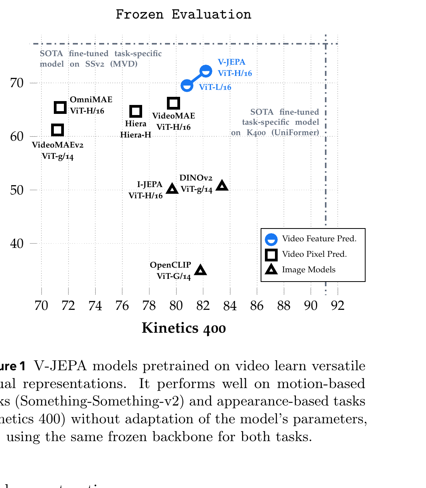

Revisiting Feature Prediction for Learning Visual Representations from Video
Adrien Bardes et al. · FAIR at Meta / Inria / ENS / NYU · arXiv:2404.08471 · 2024
主干、公式与关键图已整理；实验表格和 predictor 可视化将在下一轮精读补齐。
§1 从“图像补块”跨到“视频懂运动”
上一站 I-JEPA 证明了“预测被遮区域的表征”可以替代像素重建，但单张图没有真正的时间。V-JEPA 把相同原则扩展到时空块：只凭视频中可见部分，预测被遮住的时空区域在目标编码器中的 latent。读完这一节，你应当把它定位成视频自监督表征模型，还不是 action-conditioned robot world model。
| 训练数据 | 约 200 万公开视频；不使用文本、人工标签、负样本或预训练图像编码器。 |
| 核心目标 | 在 feature space 预测被遮住的视频时空块，而非重建 RGB。 |
| 评价方式 | 冻结 backbone，以 attentive probe 测运动、外观和低样本迁移。 |
| 不是 | 不是逐帧视频生成器，也没有动作条件，因此不能直接做机器人 MPC。 |
展开原文 · 论文问的核心问题
“How effective is feature prediction as a stand-alone objective for unsupervised learning from video?”
§2 架构：条件变量告诉 predictor“该猜哪里”
I-JEPA 已经给出 context encoder、target encoder 和 predictor。视频版没有推翻这三件套，而是把 $x$、$y$ 变成同一视频中的不同时空区域，并让 $z$ 携带目标区域的位置。关键变化是遮罩沿空间与时间扩展，目标从“物体长什么样”升级到“物体怎样运动”。

第 1 步：编码可见时空块
视频被切成 tubelet；遮掉大比例 token 后，online encoder 只处理剩余上下文。
输入是什么：相机图像或视频，加上任务指令和机器人当前状态。它们还是原始观测，模型尚未把它们变成可用于预测或控制的特征。
这一步究竟做什么：视频被切成 tubelet；遮掉大比例 token 后，online encoder 只处理剩余上下文。
输出到哪里：一组比原始输入更紧凑的内部特征；它不是最终动作或画面。这个结果会交给下一步“计算干净目标”继续处理。
为什么不能省略：模型不能高效地直接在所有原始像素和长序列上推理；这一步把信息压成后续模块能处理、比较和复用的形式。
第 2 步：计算干净目标
EMA target encoder 看完整目标区域，但它不接收梯度。
输入是什么：来自上一步“编码可见时空块”的产物：一组比原始输入更紧凑的内部特征；它不是最终动作或画面。本步骤还会按论文设置读取当前条件、时间步或训练信号。
这一步究竟做什么：本步骤执行“计算干净目标”。具体来说，EMA target encoder 看完整目标区域，但它不接收梯度。 这里处理的只是整条链路中的一个接口：把上一步的结果整理成下一步能够正确读取和继续计算的形式。
输出到哪里：一套固定且可复现的输入条件，后续所有模型都必须在这套条件下生成或行动。这个结果会交给下一步“注入目标位置”继续处理。
为什么不能省略：它承担上下两步之间的接口；缺少它，前一步产生的信息无法以正确格式或正确含义传到下一步。
第 3 步：注入目标位置
mask token / 位置条件指出要预测哪些时空坐标。
输入是什么：来自上一步“计算干净目标”的产物：一套固定且可复现的输入条件，后续所有模型都必须在这套条件下生成或行动。本步骤还会按论文设置读取当前条件、时间步或训练信号。
这一步究竟做什么：本步骤执行“注入目标位置”。具体来说，mask token / 位置条件指出要预测哪些时空坐标。 模型从相同起点产生候选未来，后续模块再检查这些未来是否符合条件、物理规律或动作需要。
输出到哪里：一套固定且可复现的输入条件，后续所有模型都必须在这套条件下生成或行动。这个结果会交给下一步“预测 latent”继续处理。
为什么不能省略：它承担上下两步之间的接口；缺少它，前一步产生的信息无法以正确格式或正确含义传到下一步。
第 4 步：预测 latent
predictor 输出每个目标位置的表征。
输入是什么：来自上一步“注入目标位置”的产物：一套固定且可复现的输入条件，后续所有模型都必须在这套条件下生成或行动。本步骤还会按论文设置读取当前条件、时间步或训练信号。
这一步究竟做什么：本步骤执行“预测 latent”。具体来说，predictor 输出每个目标位置的表征。 它把原本模糊的‘看起来对不对’拆成可重复计算或人工核对的判断，从而让不同模型能在同一标准下比较。
输出到哪里：一组诊断数值、分类结果或评测分数；它告诉后续模块当前结果哪里好、哪里需要修正。这个结果会交给下一步“只比表征”继续处理。
为什么不能省略：没有统一诊断或评分，后续模块无法知道哪里出错，也无法公平比较两个模型是否真的进步。
第 5 步：只比表征
L1 让预测靠近目标 embedding，不为叶片纹理或像素噪声付费。
输入是什么：来自上一步“预测 latent”的产物：一组诊断数值、分类结果或评测分数；它告诉后续模块当前结果哪里好、哪里需要修正。本步骤还会按论文设置读取当前条件、时间步或训练信号。
这一步究竟做什么：本步骤执行“只比表征”。具体来说，L1 让预测靠近目标 embedding，不为叶片纹理或像素噪声付费。 模型从相同起点产生候选未来，后续模块再检查这些未来是否符合条件、物理规律或动作需要。
输出到哪里：一组比原始输入更紧凑的内部特征；它不是最终动作或画面。这是图中这条链路的最终产物，随后会进入真实执行、模型更新或指标评测。
为什么不能省略：它把前面得到的内部结果落实为可执行动作、可训练模型或可解释指标，完成从方法到结果的最后一步。
§3 Loss：简单，但 collapse 约束藏在 EMA + stop-grad
有了两路编码器，最危险的捷径是二者都输出同一个常数。V-JEPA 沿用 I-JEPA/BYOL 风格的非对称训练：目标分支 stop-gradient，目标编码器是 online encoder 的指数滑动平均。直觉上，学生追一个缓慢移动的老师，而不是两边一起冲向常数解。
- $E_\theta(x)$
- online encoder 从遮罩后的视频上下文抽取 token。
- $\Delta_y$
- 目标时空位置；它决定 predictor 要回答哪一个“缺口”。
- $P_\phi(\cdot)$
- 较窄的 predictor，把上下文映射成目标 latent。
- $E_{\bar\theta}(y)$
- EMA target encoder 计算的训练靶标。
- $\operatorname{sg}$
- 停止目标分支梯度，防止两个分支互相追逐导致坍缩。
§4 证据：冻结主干也能同时读外观和运动
如果模型只靠静态外观作弊，它在 Something-Something-v2 这类依赖细粒度运动的任务上不会强。论文把同一个冻结主干同时放到 Kinetics-400 和 SSv2，V-JEPA 位于两轴的高位，说明 feature prediction 没有只学“物体类别”，也抓住了动作动态。

§5 在路线图里的位置
V-JEPA 证明“只预测视频 latent”足以学到强时空表征；V-JEPA 2 才把这个表征接上动作条件 predictor 和 MPC，跨过 world model → control 的门槛。
| 相对 I-JEPA | 从空间 mask 走向时空 mask，获得 motion representation。 |
| 相对生成式 WM | 放弃可视化未来帧，换取更抽象、更快的 latent prediction。 |
| 最大缺口 | 没有 action conditioning、没有闭环规划、dense locality 也不够好。 |
| 下一篇 | V-JEPA 2：1M 小时视频预训练 + 62 小时机器人数据 → latent MPC。 |